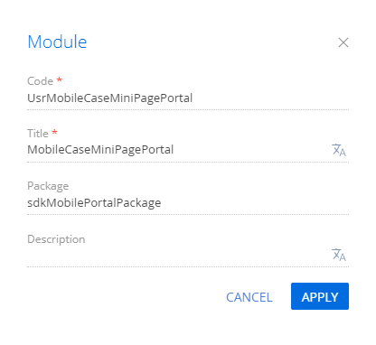

Мобильный портал (мобильное приложение для портального пользователя) — мобильное рабочее место. Назначение мобильного портала — предоставление пользователям мобильного портала возможности создания обращений и ведения переписки со службой технической поддержки клиента.
Для мобильного портала можно настроить:
- Рабочее место пользователя мобильного портала.
- Реестр обращений.
- Страницу обращения.
- Страницу добавления обращения.
Настроить рабочее место пользователя мобильного портала
Действия по настройке рабочего места пользователя мобильного портала:
- Добавить рабочее место.
- Скрыть рабочее место.
- Удалить рабочее место.
Добавить рабочее место пользователя мобильного портала
Чтобы проверить наличие рабочего места Portal:
- Перейдите в дизайнер системы по кнопке
 .
. - В блоке Настройка системы (System setup) перейдите по ссылке Мастер мобильного приложения (Mobile application wizard).
Рабочее место Portal содержится в реестре раздела Мастер мобильного приложения (Mobile application wizard). По умолчанию доступно к использованию всем пользователям мобильного портала.
Если рабочее место Portal отсутствует в реестре раздела Мастер мобильного приложения (Mobile application wizard), то необходимо его добавить.
Чтобы добавить рабочее место пользователя мобильного портала:
- Убедитесь, что Вы используете приложение Creatio версии 7.18.4 и выше.
- Перейдите в дизайнер системы по кнопке .
- В блоке Настройка системы (System setup) перейдите по ссылке Мастер мобильного приложения (Mobile application wizard).
- На панели инструментов раздела Мастер мобильного приложения (Mobile application wizard) нажмите на кнопку Добавить рабочее место (New workplace).
-
Заполните свойства рабочего места.
- Название (Name) — название рабочего места.
- Код (Code) — "Portal".
- На детали Роли (Roles) настройте права доступа к рабочему месту для пользователей или групп пользователей.
- На панели инструментов нажмите Настроить разделы (Set up sections). По умолчанию в рабочее место пользователя мобильного портала добавлен раздел Обращения (Cases).
- Сохраните настройки раздела Мастер мобильного приложения (Mobile application wizard).
В результате в приложение добавлено рабочее место пользователя мобильного портала.
Добавление рабочего места мобильного приложения подробно описано в статье Настроить рабочие места мобильного приложения.
Скрыть рабочее место пользователя мобильного портала
- Перейдите в дизайнер системы по кнопке .
- В блоке Настройка системы (System setup) перейдите по ссылке Мастер мобильного приложения (Mobile application wizard).
- В реестре раздела откройте рабочее место Portal.
- Выполните удаление пользователей или групп пользователей рабочего места Portal. Для этого на детали Роли (Roles) нажмите
 и выберите пункт Удалить (Delete).
и выберите пункт Удалить (Delete).
В результате в приложении скрыто рабочее место пользователя мобильного портала.
Удалить рабочее место пользователя мобильного портала
- Перейдите в дизайнер системы по кнопке .
- В блоке Настройка системы (System setup) перейдите по ссылке Мастер мобильного приложения (Mobile application wizard).
- В реестре раздела выберите рабочее место Portal и нажмите на кнопку Удалить (Delete).
В результате в приложении удалено рабочее место пользователя мобильного портала.
Настроить реестр обращений
Действия по настройке реестра обращений для мобильного портала:
- Добавить колонку в реестр обращений.
- Cкрыть заголовок колонки в реестре обращений.
- Настроить порядок сортировки обращений в реестре.
Добавить колонку в реестр обращений
- Перейдите в дизайнер системы по кнопке .
- В блоке Настройка системы (System setup) перейдите по ссылке Мастер мобильного приложения (Mobile application wizard).
- В реестре раздела откройте рабочее место Portal.
- На панели инструментов нажмите Настроить разделы (Set up sections).
- В реестре раздела выберите раздел Обращения (Cases) и нажмите на кнопку Настроить реестр (List setup).
- В блоке Подзаголовок (Subtitle) или Дополнительные колонки (Additional columns) нажмите на кнопку Добавить колонку (New column) и выберите необходимую колонку.
- Сохраните настройки реестра раздела Обращения (Cases).
- Сохраните настройки раздела Мастер мобильного приложения (Mobile application wizard).
Добавление колонки в реестр раздела подробно описано в статье Настроить реестр мобильного приложения.
Cкрыть заголовок колонки в реестре обращений
- Перейдите в раздел Конфигурация (Configuration).
-
В пользовательском пакете откройте схему MobileCaseGridPageSettingsPortal. Если вы еще не настраивали реестр обращений через мастер мобильного приложения, то схема MobileCaseGridPageSettingsPortal отсутствует в пользовательском пакете.
Чтобы добавить схему MobileCaseGridPageSettingsPortal в пользовательский пакет:
- Перейдите в дизайнер системы по кнопке .
- В блоке Настройка системы (System setup) перейдите по ссылке Мастер мобильного приложения (Mobile application wizard).
- В реестре раздела откройте рабочее место Portal.
- На панели инструментов нажмите Настроить разделы (Set up sections).
- В реестре раздела выберите раздел Обращения (Cases) и нажмите на кнопку Настроить страницу (Page setup).
- Сохраните настройки страницы раздела Обращения (Cases).
- Сохраните настройки раздела Мастер мобильного приложения (Mobile application wizard).
- Перейдите в дизайнер системы по кнопке
-
Cкройте заголовок колонки в реестре обращений. Для этого в начало массива модификаций diff добавьте конфигурационный объект колонки, заголовок которой планируется скрыть.
- В свойстве value укажите колонку. Шаблон имени колонки: $ИмяКолонки.
- В свойстве visible (отвечает за отображение заголовка колонки) установите значение false.
Пример скрытия заголовка колонки [Status] представлен ниже.
- На панели инструментов дизайнера нажмите Сохранить (Save).
Настроить порядок сортировки обращений в реестре
- Перейдите в раздел Конфигурация (Configuration).
-
В пользовательском пакете откройте схему MobileCaseGridPageSettingsPortal. Если вы еще не настраивали реестр обращений через мастер мобильного приложения, то схема MobileCaseGridPageSettingsPortal отсутствует в пользовательском пакете.
Чтобы добавить схему MobileCaseGridPageSettingsPortal в пользовательский пакет:
- Перейдите в дизайнер системы по кнопке .
- В блоке Настройка системы (System setup) перейдите по ссылке Мастер мобильного приложения (Mobile application wizard).
- В реестре раздела откройте рабочее место Portal.
- На панели инструментов нажмите Настроить разделы (Set up sections).
- В реестре раздела выберите раздел Обращения (Cases) и нажмите на кнопку Настроить страницу (Page setup).
- Сохраните настройки страницы раздела Обращения (Cases).
- Сохраните настройки раздела Мастер мобильного приложения (Mobile application wizard).
- Перейдите в дизайнер системы по кнопке
-
Настройте порядок сортировки в реестре обращений. Для этого в начало массива модификаций diff добавьте конфигурационный объект с настройками отображения реестра.
- В свойстве columnPath укажите имя колонки, которую планируется использовать для сортировки.
- В свойстве alias укажите алиас колонки, которую планируется использовать для сортировки.
- В свойстве orderDirection укажите порядок сортировки (1 — по возрастанию, 2 — по убыванию).
- В свойстве orderPosition укажите порядковый индекс колонки в коллекции колонок, по которой выполняется сортировка.
Пример настройки сортировки реестра обращений представлен ниже. Обращения в реестре сортируются по возрастанию значений колонки [RegisteredOn].
- На панели инструментов дизайнера нажмите Сохранить (Save).
Настроить страницу обращения
Настройка страницы обращения позволяет добавить колонку на вкладку Детали (Details).
Чтобы добавить колонку на вкладку Детали (Details) страницы обращения:
- Перейдите в дизайнер системы по кнопке .
- В блоке Настройка системы (System setup) перейдите по ссылке Мастер мобильного приложения (Mobile application wizard).
- В реестре раздела откройте рабочее место Portal.
- На панели инструментов нажмите Настроить разделы (Set up sections).
- В реестре раздела выберите раздел Обращения (Cases) и нажмите на кнопку Настроить страницу (Page setup).
- В блоке Общая информация (General information) нажмите на кнопку Добавить колонку (New column) и выберите колонку Номер (Number).
- Сохраните настройки страницы раздела Обращения (Cases).
- Сохраните настройки раздела Мастер мобильного приложения (Mobile application wizard).
Настроить страницу добавления обращения
Настройка страницы добавления обращения позволяет добавить колонку.
Чтобы добавить колонку на страницу добавления обращения:
- Перейдите в раздел Конфигурация (Configuration).
- Откройте схему MobileCaseMiniPagePortal пакета CaseMobile и скопируйте ее содержимое.
- Выберите пользовательский пакет, в который будет добавлена схема.
-
На панели инструментов реестра раздела нажмите Добавить —> Модуль (Add —> Module).
/scr_add_module.png)
-
Заполните свойства схемы.
- Код (Code) — название схемы (обязательное свойство). Должно содержать префикс (по умолчанию Usr), указанный в системной настройке Префикс названия объекта (код SchemaNamePrefix).
- Заголовок (Title) — локализуемый заголовок схемы (обязательное свойство).
 - В пользовательский модуль добавьте скопированное содержимое схемы MobileCaseMiniPagePortal пакета CaseMobile.
- В пользовательский модуль перенесите локализованные строки схемы MobileCaseMiniPagePortal пакета CaseMobile.
-
Добавьте колонку.
-
В свойство viewConfig добавьте элемент, который планируется использовать для редактирования необходимой колонки. В свойстве value укажите колонку. Шаблон имени колонки: $ИмяКолонки.
Пример добавления колонки [$ConfItem] представлен ниже.
$ConfItem — имя колонки.
-
В свойство controllers добавьте описание необходимой колонки. В свойстве columnPath укажите имя колонки схемы Case объекта.
Пример добавления описания колонки [ConfItem] представлен ниже.
-
- На панели инструментов дизайнера нажмите Сохранить (Save).
-
В манифесте портального рабочего места зарегистрируйте ранее созданную пользовательскую схему UsrMobileCaseMiniPagePortal.
-
В пользовательском пакете откройте схему MobileApplicationManifestPortal. Если вы еще не выполняли настройку приложения через мастер мобильного приложения, то схема MobileApplicationManifestPortal отсутствует в пользовательском пакете.
Чтобы добавить схему MobileApplicationManifestPortal в пользовательский пакет:
- Перейдите в дизайнер системы по кнопке .
- В блоке Настройка системы (System setup) перейдите по ссылке Мастер мобильного приложения (Mobile application wizard).
- В реестре раздела откройте рабочее место Portal.
- На панели инструментов нажмите Настроить разделы (Set up sections).
- В реестре раздела выберите раздел Обращения (Cases) и нажмите на кнопку Настроить страницу (Page setup).
- Сохраните настройки страницы раздела Обращения (Cases).
- Сохраните настройки раздела Мастер мобильного приложения (Mobile application wizard).
- Перейдите в дизайнер системы по кнопке
-
Зарегистрируйте схему.
- В свойстве Modules укажите схему, которая используется для добавления записи схемы Case объекта.
- В свойстве Models укажите схему, которая используется для расширения схемы Case объекта.
Пример регистрации схемы UsrMobileCaseMiniPagePortal представлен ниже.
-